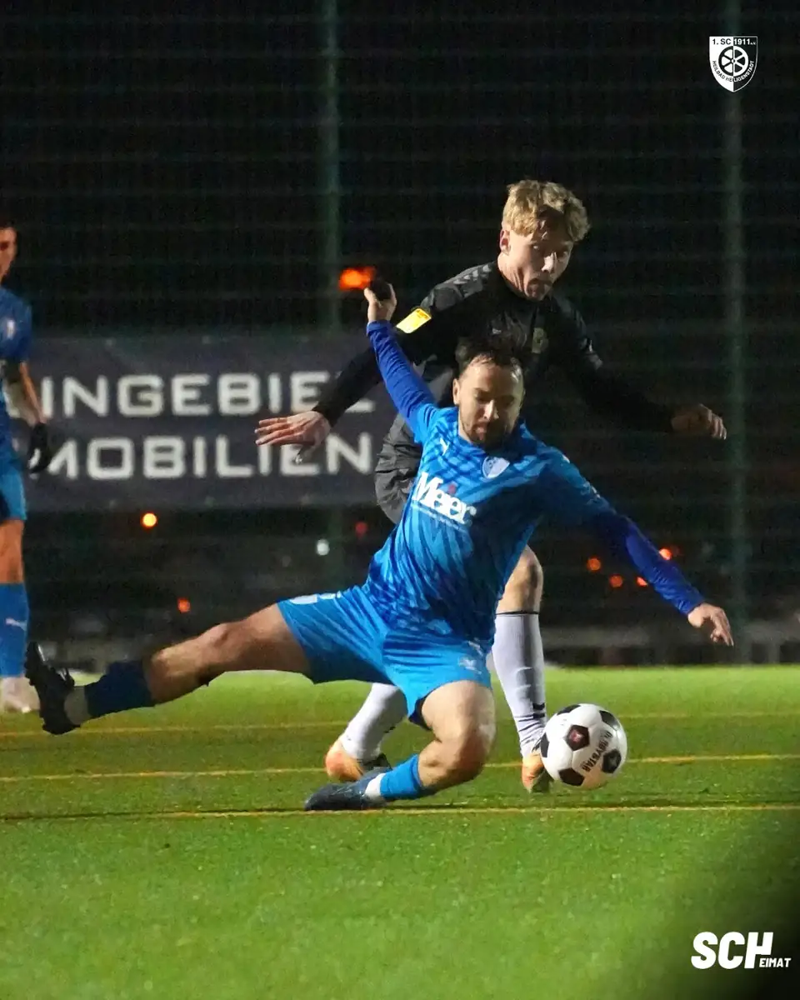
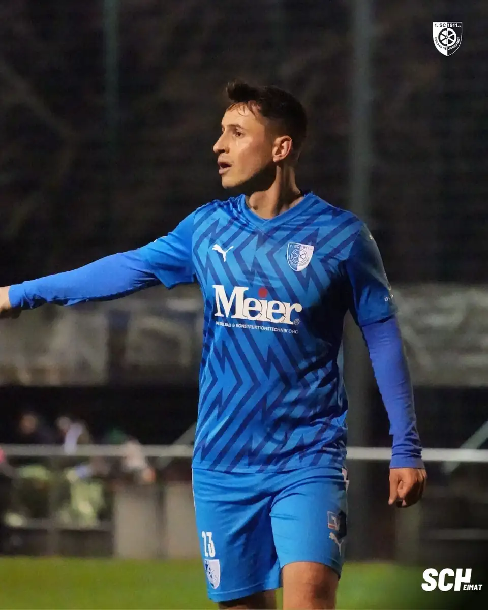
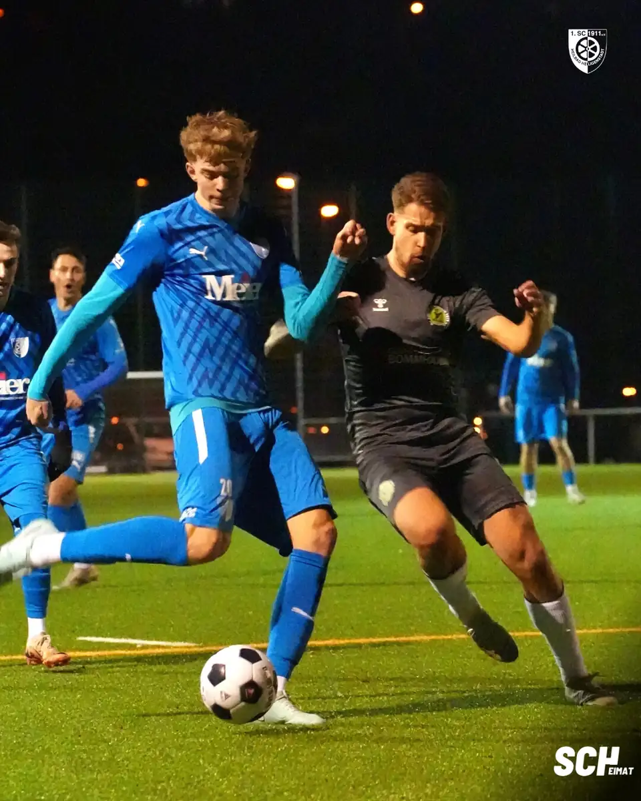
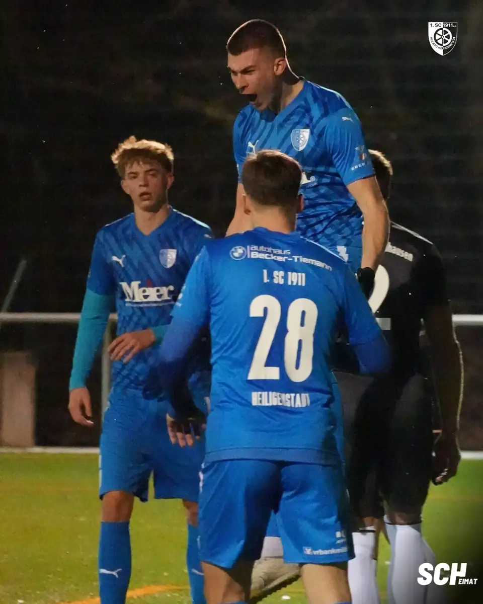
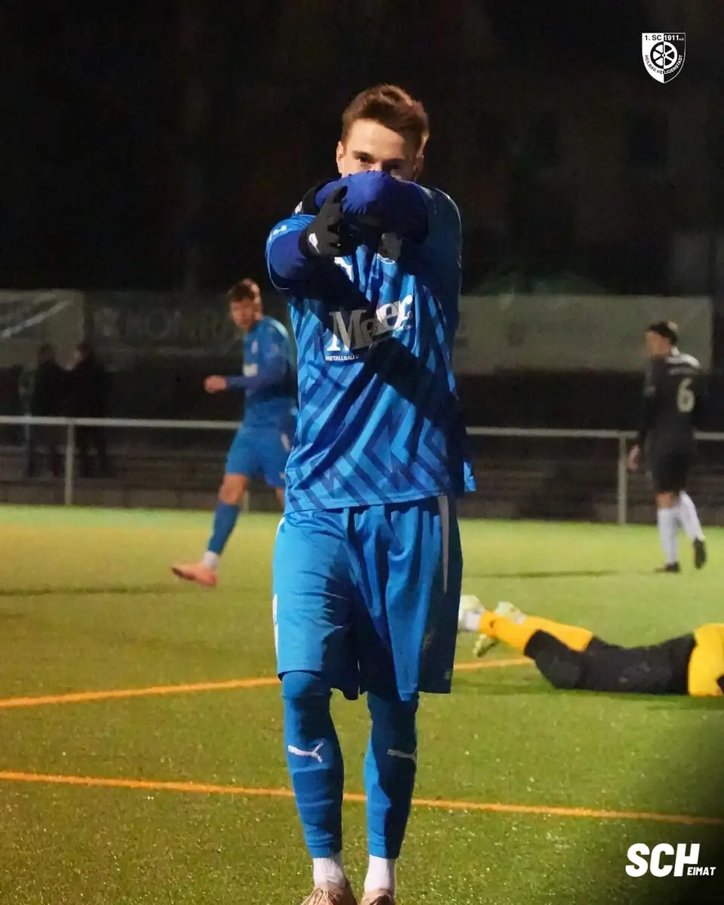
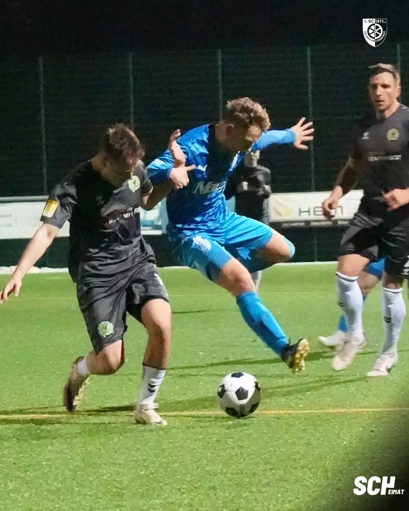
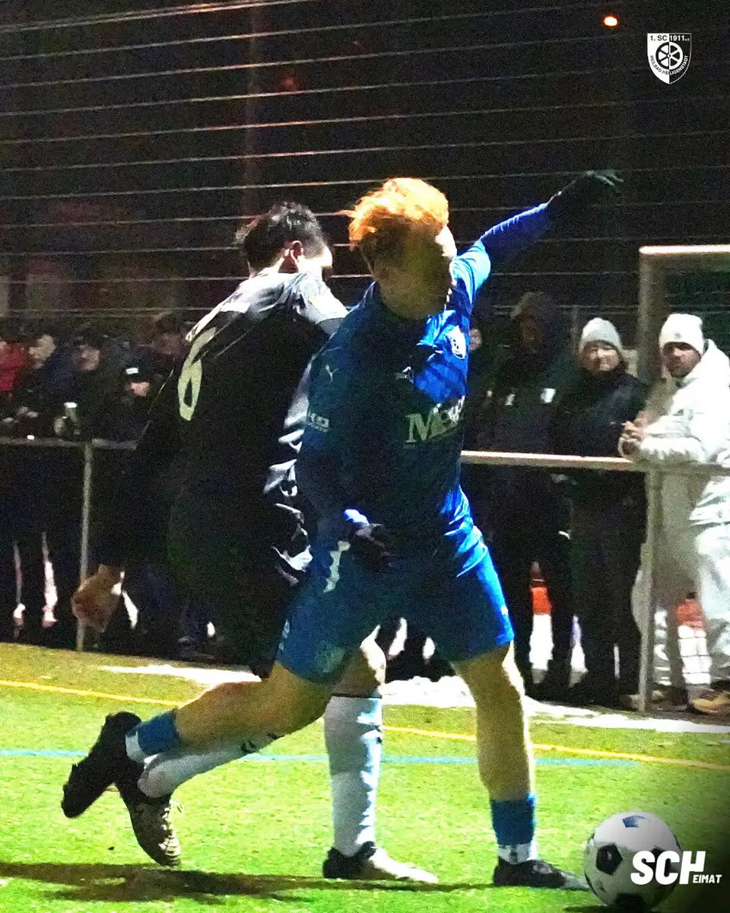
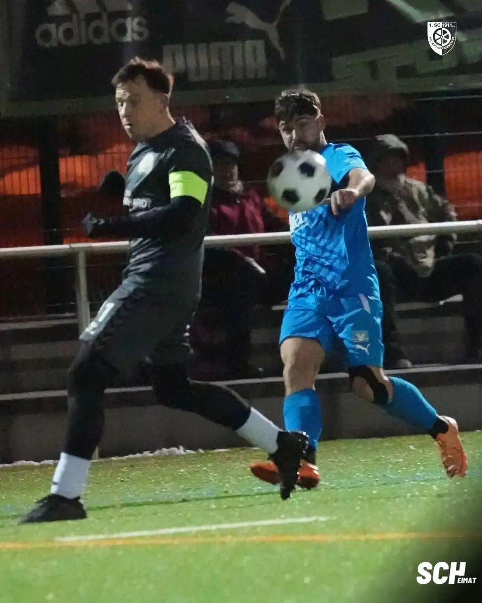
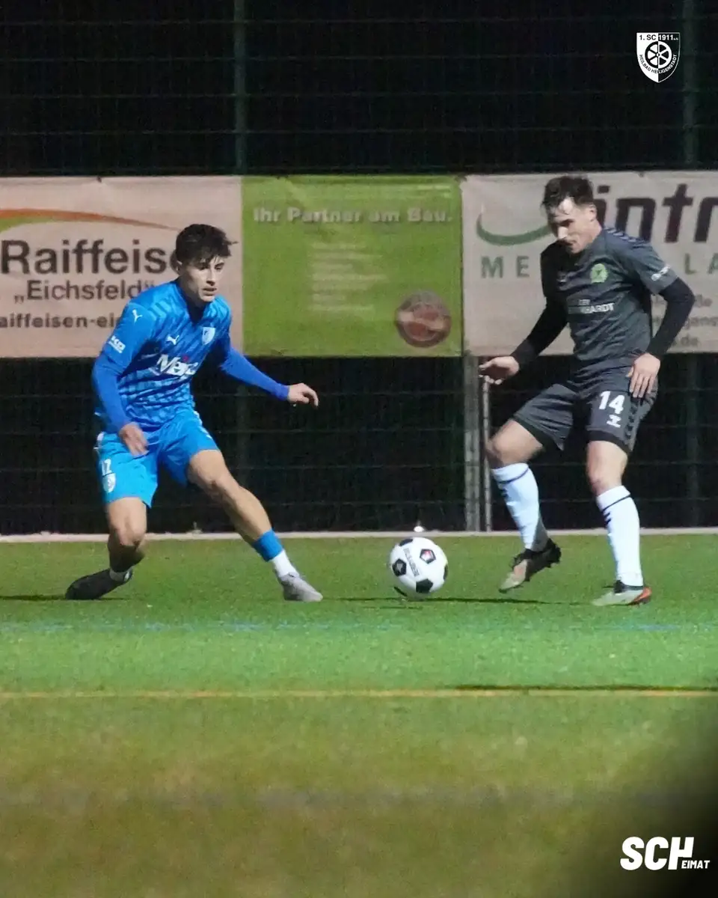

Gelungene Generalprobe: Seipel-Elf tankt Selbstvertrauen vor dem Rückrundenstart
Der letzte Test vor dem Start in die Rückrunde fühlte sich schon ein bisschen nach Pflichtspiel an. Ein Gegner aus der Hessenliga, der unsere Mannschaft noch einmal richtig fordern sollte – bessere Voraussetzungen hätte es kaum geben können. Und die Seipel-Elf zeigte von Beginn an, dass sie bereit ist für das, was in den kommenden Wochen auf sie wartet. Gegen den SV Adler Weidenhausen entwickelte sich ein intensives, temporeiches Spiel, in dem unsere Jungs schnell die Kontrolle übernahmen. Viel Laufbereitschaft und klare Abläufe waren zu sehen – genau das, was man sich nach einer langen Vorbereitung wünscht.
Zwei Treffer als Lohn für einen starken Auftritt
In der 29. Minute dann der verdiente Führungstreffer: Nach einem gut getretenen Eckball von Fabian Schnellhardt stieg Artur Voilenko am höchsten und wuchtete den Ball per Kopf ins Netz. Nur vier Minuten später, nach einem gewonnenen Kopfballduell von Johann von Breitenbuch und einem starken Zweikampf von Moritz Ruprecht, kam Maciej Wolanski frei zum Abschluss. Johannes Klotzsch im Tor der Adler konnte zunächst noch parieren, doch Kristian Bako stand beim Abpraller goldrichtig und staubte zum 2:0 ab. In Durchgang zwei wechselte Trainer Benedikt Seipel noch einmal kräftig durch und schickte ab der 46. Minute gleich fünf neue Kräfte auf den Platz. Der SCH erarbeitete sich weiterhin die ein oder andere Möglichkeit, unter anderem durch Martin Fiedler und Leon Gümpel, dessen Schuss zwar im Tor landete, jedoch aufgrund einer Abseitsstellung nicht zählte.
Mit Rückenwind in die Rückrunde
Der 2:0-Erfolg gegen den Hessenligisten hat gezeigt: Diese Mannschaft ist zusammengewachsen, hat in den vergangenen Wochen hart gearbeitet und brennt darauf, dass es endlich wieder um Punkte geht.
Jetzt heißt es: Fokus halten, die letzten Tage nutzen – und dann mit voller Energie ins Spieljahr 2026 starten. Die Generalprobe ist geglückt. Ab Samstag zählt es richtig.
Spieldaten
1. SC 1911 Heiligenstadt – SV Adler Weidenhausen 2:0 (2:0)
SC Heiligenstadt
Stankovic – Wolanski (46. Wilhelm) – Köhler (68. von Breitenbuch) – Göbel (46. Jeschke) – Voilenko – Stashenko (68. Vogt) – von Breitenbuch (63. Abdoul Aziz) – Schnellhardt (63. Lerch) – Ruprecht (46. Gümpel) – Gorges (46. Pietsch) – Bako (46. Fiedler)
SV Adler Weidenhausen
Klotzsch – Hammer – Engelhardt – Renke – Steinmetz – Gerbig – Jung – K. Krug – Immig – M. Krug – Müller
Schiedsrichter
Schröter
Zuschauer
50
Tore:
1:0 Voilenko (29.), 2:0 Bako (33.)








